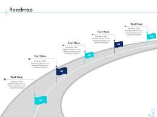

Clinical pharmacology is the branch of pharmacology that focuses on the study of **drugs in humans**, particularly their effects, uses, and mechanisms of action in clinical settings. It involves understanding how drugs interact with the human body, their therapeutic effects, side effects, and how they can be used **safely and effectively** to treat various medical conditions. Clinical pharmacology bridges the gap between basic pharmacological research and patient care, ensuring that drugs are used appropriately in medical practice.
One of the core areas is the study of **drug absorption, distribution, metabolism, and excretion (ADME)**, which are critical factors in determining a drug's efficacy and safety. Clinical pharmacologists assess how a drug behaves in different populations (age, genetics, disease states). Understanding these factors helps determine optimal **dosing regimens** and avoid adverse drug reactions or drug interactions.
Another important aspect is **pharmacovigilance**, which involves monitoring the safety of drugs after they are marketed. By identifying potential risks, clinical pharmacologists help improve drug safety guidelines and inform regulatory decisions.
Clinical pharmacologists also play a vital role in **clinical trials**, designing and overseeing trials to ensure drugs are tested under the most appropriate conditions to evaluate their safety, efficacy, and overall benefit-risk profile.
*Healthcare AI is having its moment, with an explosion of new entrants and exceptionally high market demand for solutions from established incumbents. This integration is changing clinical practice from Big Tech and Big Pharma to the institutions responsible for our own care.*
